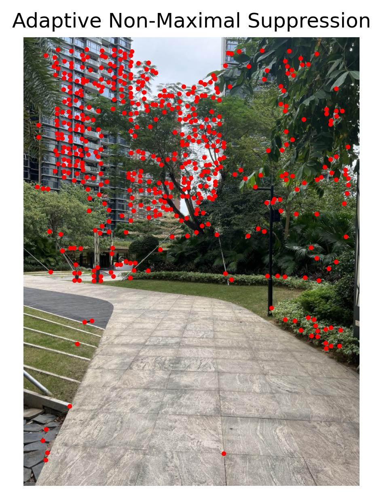

1 Take Photos
Take two photos of a scene with a camera. The photos should have some overlap between them.
All these pictures are taken with only a planar rotation of the phone with the COF not changing position (the best I can...)
Ball Left
Ball Right
Build Left
Build Right
Garden Left
Garden Right
2 Recover Homography
- Definition: A homography is a transformation that maps points from one plane to another, typically used in image processing for tasks like image alignment and stitching.
- Use Case: The matrix represents a projective transformation, which preserves straight lines but not necessarily angles or lengths.
- Equation: The transformation is defined by eight parameters, computed by solving a system of linear equations using corresponding points from two images.
3 Warp and Rectification
- Use either forward or inverse warping and avoid aliasing during resampling.
- Consider using
scipy.interpolate.griddatafor a vectorized solution. - Predict the bounding box of the resulting image and manage unfilled pixels using an alpha mask.
- Here are some rectification result. With hand-written, known desination size.

Kindle

Kindle Rectified
Cp

Cp Rectified
Cp2

Cp2 Rectified
4 Stitch and Blend
- Blend images into a mosaic using weighted averaging to avoid strong edge artifacts.
- Warp the images so they’re registered and choose to warp into a reference projection or a new one.
- Manage blending by using an alpha channel and consider using a Laplacian pyramid for blending if needed.
- Naive blending would have huge artifects of seaming lines, so we adopt a distance transform with alpha blending.
ball_mask_1
ball_mask_2
ball_blended
build_blended
garden_blended
5 Detect Corner Features: Harris Corners
- Use Harris Corner Detector:
- Use the provided
harris.pyto detect corners in the image. - Configure parameters, if needed, to detect sufficient feature points for stitching (default settings may suffice).
- Use the provided
- Overlay Harris Corners:
- After detecting corners, overlay them on the original image to visualize detected points.
- Save this visualization as an image for later comparison.
- Directly Applying the Harris.py would results in the following images, where corners are too many and not very well disctributed.
garden_left_with_harris_corners
garden_right_with_harris_corners
6 Adaptive Non-Maximal Suppression (ANMS)
- How do we deal with the previous problem?
- Focus on the adaptive non-maximal suppression algorithm to understand how it achieves a uniform distribution of features.
- Implement ANMS:
- For each detected corner, calculate the Harris corner strength.
- Initialize a suppression radius
r = 0and iteratively increaseruntil only a fixed number of feature points remain (as specified in the task, 800 points). - For each feature, find the minimum radius
r_isuch that no other point with significantly higher corner strength lies within radiusr_i.
- Visualize and Save:
- Overlay the ANMS-selected corners on the original image.
- Save this result to compare with the Harris-only detection result.
garden_left_ANMS

garden_right_ANMS
7 Extract Feature Descriptors!
- Extract 8x8 Patches (Section 4):
- For each corner detected in Step 2, extract an 8x8 patch of pixels centered on the corner.
- Sample this 8x8 patch from a larger 40x40 region around each feature point to gain spatial context.
- Normalize Descriptors:
- Apply bias/gain normalization to make the descriptor invariant to intensity changes.
- Normalize each descriptor so that the mean intensity is 0 and the standard deviation is 1.
- Skip Rotational Invariance:
- For simplicity, avoid rotation adjustments; just extract axis-aligned patches as specified.
test_descriptor1[0]
8 Feature Matching
- Nearest Neighbot with Lowe's Trick
- For each feature descriptor in image A, find the nearest (most similar) descriptor in image B using Euclidean distance.
- Use the nearest-neighbor ratio test proposed by Lowe:
- Calculate the ratio of the distance to the nearest neighbor to that of the second-nearest neighbor.
- Select matches where this ratio is below a certain threshold (refer to the figure in the paper for threshold estimation).
- Filter Matches:
- Retain only pairs that satisfy the threshold criterion, reducing incorrect matches.
- Save Matched Pairs for Visualization:
- Optionally, overlay lines on an image to indicate the matched feature points between the two images.
ball_match_features
build_match_features
garden_match_features
9 RANSAC
- Select Four Points for Homography:
- Implement a RANSAC-based approach to find the best homography matrix.
- Randomly select four matched feature pairs, compute the homography, and calculate the transformation matrix.
- Iterate and Select Best Homography:
- Run multiple RANSAC iterations to refine the homography matrix, minimizing re-projection errors.
- Discard outliers to ensure robust homography estimation.
ball_ransac_matches
build_ransac_matches
garden_ransac_matches
10 Final Auto-blending Results
ball_blended
ball_auto_blended
build_blended
build_auto_blended
garden_blended
garden_auto_blended